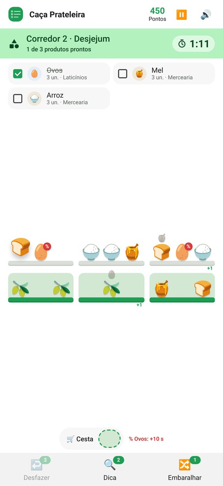

Caça Prateleira: Supermercado
Cada corredor tem uma lista de compras. Toque num produto e depois numa prateleira com espaço livre. Junte três produtos iguais numa prateleira para esvaziá-la, e a fileira de trás vem para a frente. Marque tudo na sua lista antes que o tempo acabe e pegue seu cupom fiscal.
Baixar grátis na App Store

Como jogar
- Toque num produto e depois numa prateleira com espaço livre.
- Três produtos iguais lado a lado esvaziam a prateleira.
- Quando a prateleira esvazia, os produtos de trás vêm para a frente.
- Marque cada produto da lista antes que o tempo acabe.
O que tem no jogo
- Produtos do dia a dia: tomate, café, pão, sabão em pó e mais
- Corredores cada vez mais difíceis, com fileiras de trás, cesta, ofertas e caixas fechadas
- Lista do dia: o mesmo desafio para todos, um novo a cada dia
- Missões diárias, medalhas, sequências e mapa dos corredores
- Desfazer, dica e embaralhar, pontos de combo e cupom com estrelas
- Sem anúncios obrigatórios: veja um anúncio curto só se quiser +30 segundos ou uma ajuda extra
- Funciona offline, sem conta
Baixar grátis na App Store
Perguntas
Caça Prateleira é grátis?
Sim. O jogo é gratuito para baixar e jogar. Há compras opcionais dentro do app (um pacote de ajudas e o Premium) e anúncios premiados opcionais; nada disso é necessário para terminar os corredores.
Funciona offline?
Sim. Dá para jogar sem internet e sem criar conta.
Em quais aparelhos funciona?
No iPhone, pela App Store.
Suporte
Dúvidas ou problemas: oguz.kamburoglu@gmail.com
Política de privacidade (em turco)
Türkçe · English · Deutsch · Español · Français · Português · Русский